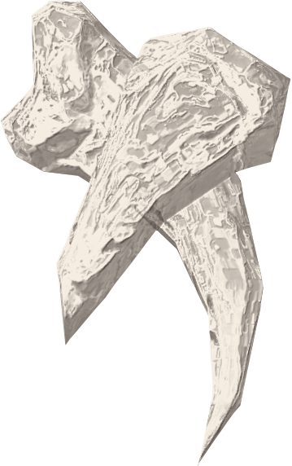

Asaldak's Sugar Claws

Asaldak's Sugar Claws is one of Elsweyr's best kept secrets. Unlike Asaldak's actual claws...
Ingredients
- 1 cup from Sack of Flour
- 2 cups of Honey
- 1 1/2 tsp Extract from Vanilla Plant
- 1 1/4 cups Moon Sugar
How-To
- Grind Moon Sugar and Flour into a mortar and pestle until fine
- Add Extract from Vanilla Plant and mix together to create a paste
- Add Honey and mix together
- Push claw into ice block to form the desired shape and pour mixture into place
- Wait until frozen and extract
Return home